This tutorial will show you how to set up advanced physics constraints to synchronize the rotation of gear-like mechanisms.
Basics
First you'll need to know the basics; how to add gears and how to set up a master and slave gear. You should already be familiar with physics Point Constraints, Meshes, and Rigidbody components.
Adding the Master Gear
- Create a physicalized entity (like a gear or torus), including Mesh and RigidBody. Name it something straightforward, like "gear_master."
In the Properties, click +Add Component and add a Physics →Point Constraint component to your gear. To allow full free rotation around one axis and eliminate any wobble on other axes, set the Minimum X Angle to -360 and the Maximum X Angle to 360. Set the desired axis (perpendicular to the diameter of the gear, like the axle of a wheel) to 1. (You'll see the "axle" represented by a yellow line as long as your helpers are enabled):
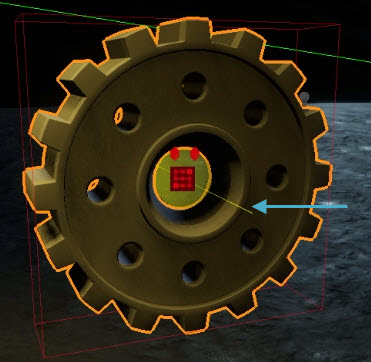
Axle line
- This line may be easier to see if you turn on Wireframe mode (Alt + W).
- If you do want the gear to "wobble" as if it's loose on its axle, use a non-zero Maximum YZ angle.
- If your gears' physics proxies will come into contact with each other, we suggest you disable Send Collision Signal in the Rigidbody Properties and enable the Point Constraint component's No Attachment Collisions.
Adding the Linker Entity
Via the Create Object tool, add an Empty Entity that will be used to link the movement between the gears. Technically, while this entity has no constraints attached to it, it is the "owner" of the constraint. In this example, we'll name it "gear_linker."
It makes no difference where this entity is positioned, but for clarity, we suggest keeping it somewhere between your two gears.- Add a Rigidbody component to this "linker" entity; the gear link will not work without this component!
- Select the master gear entity and use the Properties panel's Entity Links → Link Tools → Pick button to link the gear to the empty linker entity. Be sure to close the Pick Object tool from the Perspective Viewport's window after linking to the empty entity:
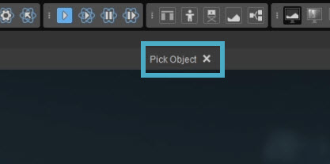
Close Pick Object tool For clarity, we recommend renaming the entity link between the gear and the linking entity to something that clarifies its role, such as "gear_linker":
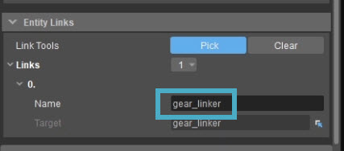
Rename entity link
Adding the Slave Gear
- Duplicate your gear entity. Name the duplicate gear something like "gear_slave-1." Note that if the Minimum X Angle and Maximum X Angle values on the gear's Point Constraint's component don't match the minimum and maximum X angles on the master gear's Point Constraint, the smaller value will limit the range of movement on both gears (in either direction between master and slave gears).
In order to create the illusion that one gear is making the other(s) move, position the two gears at any angle you like, but such that the teeth or surfaces of the gears appear to engage or touch. Depending on your gear design, you may need to rotate one of the gears around its axle so its teeth appear to engage:
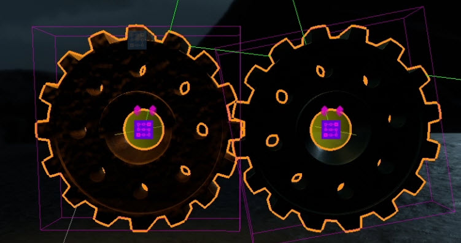
Gears engaging
Synchronizing the Gears
- Select the first, master gear. Use the Entity Links → Link Tools → Pick button to link to the slave. We suggest naming the entity link something that helps you understand which gear it's linked to, like "slave1" or "slave_right". Be sure to close the Pick Entity tool before continuing!
The master gear should now be linked to the slave gear and the linker entity. (The order of the links makes no difference.) Go to Properties → +Add Component and add a Physics →Plane Constraint component to the master gear.
This will not be used to constraint the gear's movement to a two dimensional plane, but will be used to move the slave gear in sync with the master gear.Set the Plane Constraint component's Axis so the plane's normal (the yellow line that emerges perpendicular from the plane) is parallel to the common movement axis (rotation). For simple, synchronous rotation, position the Plane Constraint as close as possible to where the two gears contact each other, or halfway between each other if they are separated. With two gears standing up and facing the camera, the Plane Constraint's normal (not the plane itself) should be vertical (facing up or down makes no difference), like this:
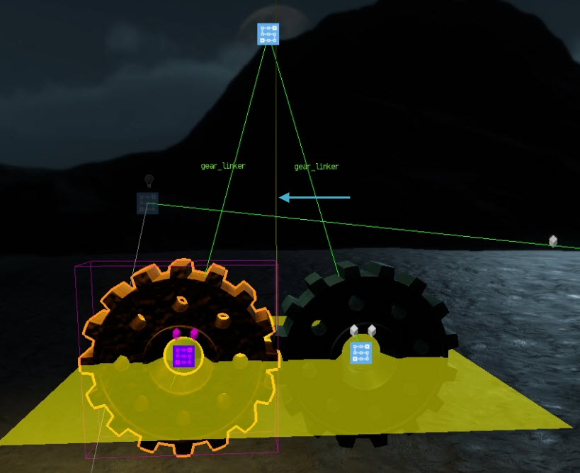
Plane Constraint normal and positionSet the Plane Constraint component's Twist rotation min angle to -360, its Twist rotation max angle to 360, and its Bend max angle to 180.
- Make sure Free Position is disabled and Active is enabled.
- Copy the name of the link from the master gear to the linker entity and paste it into the plane constraint component's Helper Link Name.
- Copy the name of the link from the master gear to the slave gear and paste it into the plane constraint component's Target Link Name.
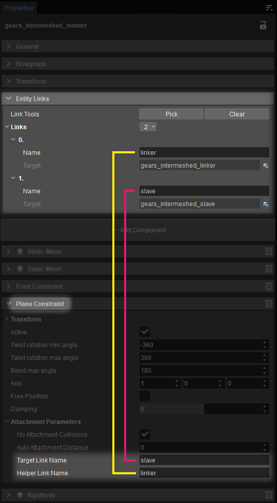
- Save your level, enable physics (Ctrl + P) and use the pull physics tool to test rotation of either gear. They should move synchronously.
- You might want to experiment with positive damping values for the Point Constraint to prevent the gears from spinning forever. Values of 0.1 to 0.4 are typical, but it depends on mass and the desired effect. (for example, making the rotation appear to stop naturally from friction).
- To change the direction of rotation on a slave gear, move the master gear's Plane Constraint to the other side of the master gear.
- The distance between the master gear and the Plane Constraint will determine the ratio of rotation between the master and the corresponding slave gear. This is especially useful for gears with different sizes.
- Always show your physics proxies when testing this feature, and make sure that your physics proxy is consistent and up to date with the actual mesh. An easy way to reset physics and regenerate the proxy is to simply delete the entity and then undo.
- Since gears themselves are fairly complex meshes, we advise generating simple cylinder proxies to handle collisions. You might also try limiting the diameter of the proxy to the main body of the gear rather than extending to the edge of the teeth, since the gear teeth are unlikely to move in perfect imitation of physical engagement, and such a proxy avoids collisions between the gear teeth.
- Be aware that link names are case sensitive!
- Never scale meshes. This will create inconsistencies between the render and the physics proxy that will produce unexpected behavior. This will become obvious when you reveal proxies and see the issue.
- The ratio of movement between a master and slave gear can be controlled by the position of the Plane Constraint component. Specifically,the ratio is the same as the ratio of the distances (radii) to the contact point. For example, if a large gear has distance R and a small gear has distance r, for each full rotation of the large gear πR the small gear will have to make (2πR)/(2πr) = R/r rotations.
Advanced Setups
Of course this gear functionality is not limited to one master gear and one slave gear, or making the gears turn in opposite directions. You can have many "slave" gears driven by a "master," but you must use a separate Plane Constraint component for each slave gear, using a unique link name for each Plane Constraint's Target Link Name (the link to the corresponding slave gear) and the same name of the link to the linker entity for each Plane Constraint's Helper Link Name.
You can also use slave gears as masters to drive additional gears linked directly to them. The Point Constraint on this master/slave gear will serve both its slave and master functions, but you will need to add a Plane Constraint component to the master/slave gear for each of its slave gears, along with the appropriate link names as described above.
Multiple Slave Gears
Setting up multiple slave gears is fairly straightforward.
- Duplicate the existing slave gear. Move it to where you want it to be, e.g. the other side of the master gear:
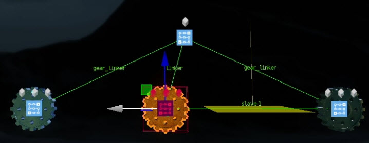
Second slave gear duplicated - This new slave gear will need its own Plane Constraint, so select the master gear and add another Plane Constraint. Name the gear something like "gear_slave-2".
- Link the master gear to the new slave gear. Name this link something that helps you understand which gear it's linked to, like "slave2".
- Copy the name of the link from the master gear to the linker entity and paste it into the plane constraint component's Helper Link Name.
- Copy the name of the link from the master gear to the slave gear and paste it into the plane constraint component's Target Link Name.
- Position the Plane Constraint in such a way that the new slave gear rotates at the desired speed and in the desired direction.
It may be beneficial to rename the links to describe which gears they link to, rather than just an arbitrary "slave-1", "slave-2" etc, which may become confusing when adding more and more slave gears.
Non-Parallel Location
Of course, gears aren't always positioned neatly in a straight line; sometimes a slave gear is off to the top left or right of the master gear. All you really need to do is move the gear and rotate the Plane Constraint. Rotating the Plane Constraint is not done with Transform → Rotation, however. The property you'll need for this is Axis:
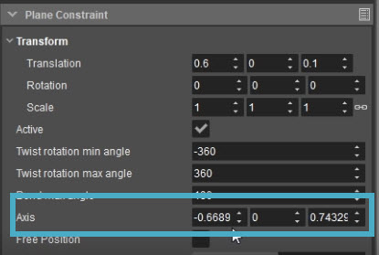
Change Axis for rotation Plane Constraint
Be sure to first carefully at the entity links on your master gear and be sure that you're moving the correct plane constraint!
Together with changing the Translation, you can position the Plane Constraint perpendicular to the contact point between the master and slave gears, like this:
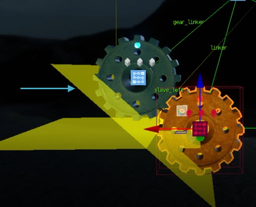
Plane Constraint rotated
Now they will rotate like this, in opposite directions, as if intermeshed:
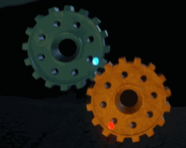
Offset slave gear rotating
Rotating in Same Direction
If you want your gears to rotate in the same direction, like for example wheels in tank treads do, this is how you need to set it up:
- Set up a master gear and several slave gears as explained above. However, make sure the gears or wheels don't appear to be intermeshed.
To make the gears rotate in the same direction, the Plane Constraints generally need to be quite far away:
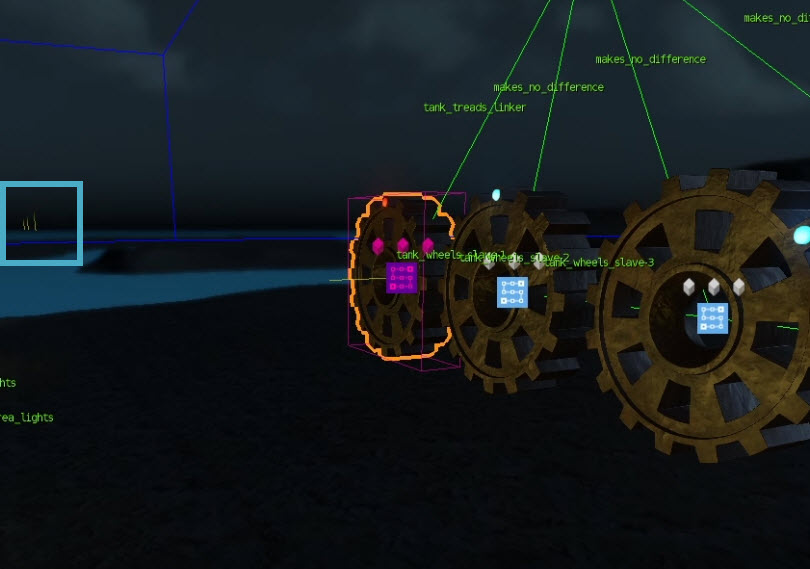
Same Direction Plane ConstraintsIn this example, with the gears 1m in diameter and fairly close together, the Plane Constraints for the three slave gears are 80m, 120m and 160m away from the master gear, respectively.
- Other than this, everything is exactly the same.
Multiple Masters and Slaves
Finally, any slave gear can also be used as a master gear to drive its own set of slave gears if necessary; you simply need to set up the same links and plane constraints between the secondary master and its slaves (in addition to that secondary master being a slave to a primary master).
Video Tutorial
For more detailed information and to watch a video tutorial about these setups, see below.